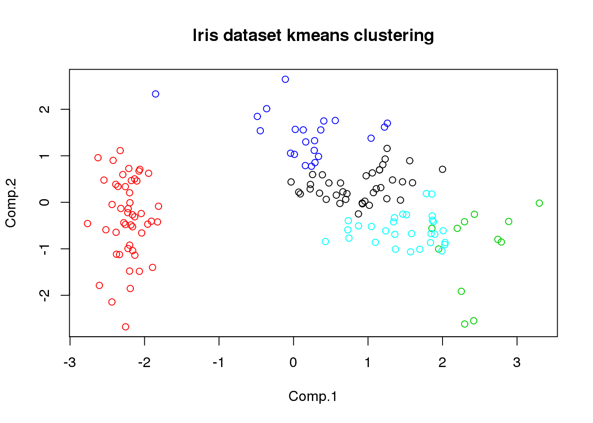
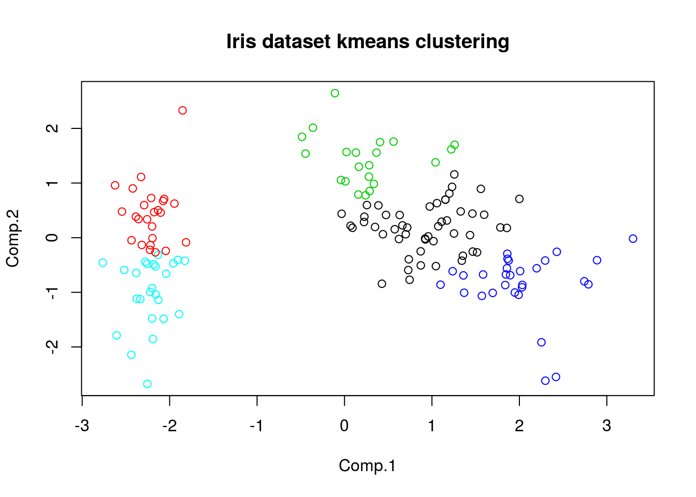
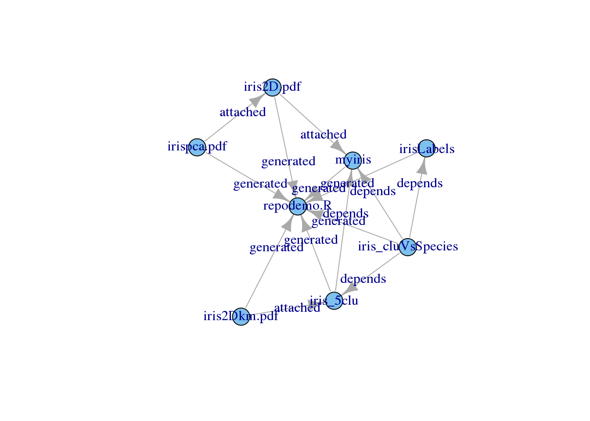
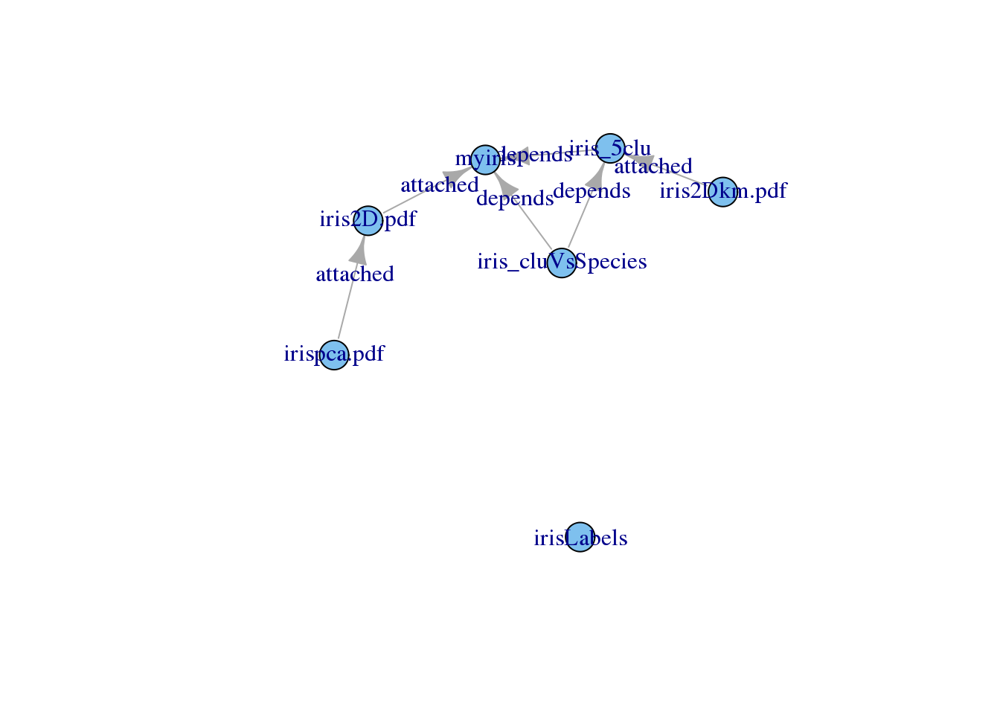

“Thou Shalt Not save() Or load()”
This is a getting-started guide to the repo R package, which implements an R objects repository manager. The motivations behind the development of repo concern both scientific considerations, as a tool to improve reproducibility in computational research, and practical, as a solution to everyday problems of people working in the same fields.
Data analysis is a also a data multiplication activity. Starting from an initial resource, derived ones are built, each of which can be used in turn to build more processed data. After working for a while on data analysis projects, simple repetitive tasks such as locating a resource built in the past (what was its name? in which directory was it stored? for which project? on which machine?) or remembering how it had been made (which model? which parameters? which script?) can quickly become daunting.
The repo package tries to help with such everyday issues. It builds one (or more) centralized local repository where R objects are stored together with corresponding annotations, tags, dependency notes, provenance traces. Once a repository has been populated, the user is presented with a structured collection of all the stored resources, which can be easily explored, navigated, modified, imported and exported.
Main features include:
What follows is a walk-through aimed at quickly introducing to most of the repo features.
First of all, the following will enable repo:
library(repo)The fully qualified name of a script file is a good provenance trace for all the data produced by the script. It can be obtained like this:
src <- normalizePath("repodemo.R")However, for this guide full paths from my hard drive will be hidden:
src <- "repodemo.R"The following command creates a new repository in “./repodemo” (by default the repo is created in “~/.R_repo”) or open an existing one in the same directory. To avoid confirmation requests during the generation of this document, they’re turned off through the force parameter. The variable repo will be used as the main interface to the repository throughout this guide.
repo <- repo_open("repodemo", force=T)## Repo root created.
## Repo created.In this section, some data will be stored inside the repository just created, namely: a normalized version of the Iris dataset; a dimensionality-reduced and a clustering of the same data; some visualizations.
The Iris dataset is readily found in the datasets R package. However, here a normalized version of it will be stored in the repo. Here’s the data to store:
myiris <- scale(as.matrix(iris[,1:4]))A call to repo$put will provide the following parameters to properly store the object in the repository:
obj The variable containing the object to store: myiris.
name An identifier for the variable. At the moment any string is accepted, but this may change in favor of sanitized names. Best practice is to use a short name without special characters.
description A verbose description of the variable contents.
tags A set of tags. Tags are used to subset the repo for many purposes. For example in order to be able to select only items produced by this script, a specific tag will be added accordingly (repodemo).
src Name of the file containing the source code that generated the object being put. This part of the object’s “provenance trace”.
replace A logical that tells repo whether to overwrite an existing entry by the same name. Setting it to true allows to run a script over without interruptions.
Thus, the following call to the put method will store the contents of myiris in the repo. The data will be actually saved in the repo root in RDS format.
repo$put(
obj = myiris,
name = "myiris",
description = paste(
"A normalized version of the iris dataset coming with R.",
"Normalization is made with the scale function",
"with default parameters."
),
tags = c("dataset", "iris", "repodemo"),
src = src,
replace=T
)In this example, the class annotation will be stored separately. Here’s a more compact call to put:
repo$put(iris$Species, "irisLabels", "The Iris class lables.",
c("labels", "iris", "repodemo"), src, replace=T)The Iris dataset is 4D and PCA can be used to produce a 2D visualization. The following code produces such visualization and shows it:
irispca <- princomp(myiris)
iris2d <- irispca$scores[,c(1,2)]
plot(iris2d, main="2D visualization of the Iris dataset",
col=repo$get("irisLabels"))Note that irisLabels is taken on the fly from the repo. This prevents the creation of a variable in the current environment and can sometimes be convenient.
Wouldn’t it be nice to store the figure itself in the repo and somehow link it to the iris data? This can be done exploiting the attach method, which can store any file in the repo as is, together with usual annotations (description, tags, etc.). Internally, attach calls put, so it accepts most of its parameters. However, two differences are worth noting:
filepath Instead of an identifier, attach takes a file name (with path). The file name will be also the item identifier.
to This optional parameter tells repo which item the new one is attached to.
pdf("iris2D.pdf")
plot(iris2d, main="2D visualization of the Iris dataset",
col=repo$get("irisLabels"))
invisible(dev.off())
repo$attach("iris2D.pdf", "Iris 2D visualization obtained with PCA.",
c("visualization", "iris", "repodemo"), src, replace=T, to="myiris")attach actually creates a copy of the attached file in the repo root, so the original one can be safely removed:
invisible(file.remove("iris2D.pdf"))Wanna see something even nicer? The attached PDF can be opened using an external PDF viewer directly from repo through the sys method. On a Linux system, this command will run the Evince document viewer and show iris2D.pdf:
repo$sys("iris2D.pdf", "evince")Back to data analysis, the PCA eigenvalues showed below can give hints on the reliability of the 2D plot:
plot(irispca)
So attaching the plot of the PCA eigenvalues to the plot of the 2D visualization could be a good idea. This is attaching to an attachment and is OK.
pdf("irispca.pdf")
plot(irispca)
invisible(dev.off())
repo$attach("irispca.pdf", "Variance explained by the PCs of the Iris dataset",
c("visualization", "iris", "repodemo"), src, replace=T, to="iris2D.pdf")
invisible(file.remove("irispca.pdf"))The following code makes a clustering of the Iris data and stores it in the repo. There is still one parameter to note here:
kiris <- kmeans(myiris, 5)$cluster
repo$put(kiris, "iris_5clu", "Kmeans clustering of the Iris data, k=5.",
c("metadata", "iris", "kmeans", "clustering", "repodemo"), src,
depends="myiris", T)The following shows what the clustering looks like. The figure will be attached to the repo as well. Note the dependency.
plot(iris2d, main="Iris dataset kmeans clustering", col=kiris)
pdf("iris2Dkm.pdf")
plot(iris2d, main="Iris dataset kmeans clustering", col=kiris)
invisible(dev.off())
repo$attach("iris2Dkm.pdf", "Iris K-means clustering.",
c("visualization", "iris", "clustering", "kmeans", "repodemo"), src,
replace=T, to="iris_5clu")
invisible(file.remove("iris2Dkm.pdf"))Finally, the last part of the analysis computes a contingency table of the classes versus clusters. Let’s assume that this analysis is meant to be qualitatively, so the table is not really important. However it could come handy in the future. This is a possible use case for the special tag hide, which prevents an item from being shown by default. Attachments are automatically hide-tagged.
res <- table(repo$get("irisLabels"), kiris)
repo$put(res, "iris_cluVsSpecies",
paste("Contingency table of the kmeans clustering versus the",
"original labels of the Iris dataset."),
c("result", "iris","validation", "clustering", "repodemo", "hide"),
src, c("myiris", "irisLabels", "iris_5clu"), T)The info method provides details about repo items, but when called without arguments it shows some self-explaining information about the repo:
repo$info()Root: repodemo
Number of items: 7
Total size: 18.48 kB The repo library supports an S3 print method that shows the contents of the repo. All non-hidden items will be shown, together with some details, which by defaults are: name, dimensions, size.
repo ## by default resolves to print(repo) ID Dims Size
myiris 150x4 1.82 kB
irisLabels 150 124 B
iris_5clu 150 115 BAs expected, hidden items are not shown. The following makes all the items appear:
print(repo, all=T) ID Dims Size
myiris 150x4 1.82 kB
irisLabels 150 124 B
@iris2D.pdf - 5.84 kB
@irispca.pdf - 4.38 kB
iris_5clu 150 115 B
@iris2Dkm.pdf - 6.02 kB
iris_cluVsSpecies 3x5 179 BItems can also be listed selectively. With the following call, only items tagged with “clustering” will be shown:
print(repo, tags="clustering", all=T) ID Dims Size
iris_5clu 150 115 B
@iris2Dkm.pdf - 6.02 kB
iris_cluVsSpecies 3x5 179 BAll attachments have the attachment tag, so they can be selectively visualized this way:
print(repo, tags="attachment", all=T) ID Dims Size
@iris2D.pdf - 5.84 kB
@irispca.pdf - 4.38 kB
@iris2Dkm.pdf - 6.02 kBFor the same reasons, one may want to show only hidden items:
print(repo, tags="hide", all=T)
ID iris_cluVsSpecies
Dims 3x5
Size 179 BFinally, also the columns shown can be selected. This command shows only the tags:
repo$print(show="t", all=T) ID Tags
myiris dataset, iris, repodemo
irisLabels labels, iris, repodemo
@iris2D.pdf visualization, iris, repodemo
@irispca.pdf visualization, iris, repodemo
iris_5clu metadata, iris, kmeans, clustering, repodemo
@iris2Dkm.pdf visualization, iris, clustering, kmeans, repodemo
iris_cluVsSpecies result, iris, validation, clustering, repodemo, hideIn the previous sections dependencies were set for some items. In addition, some items were stored as attachment to other items. Finally, all items were annotated as being produced by this script. In repo, all these relations are summarized in the dependency graph. The formal representation of the graph is a matrix, in which the entry (i,j) represent a relation from i to j of type 1, 2 or 3 (dependency, attachment or generation). Here’s how it looks like:
depgraph <- repo$dependencies(plot=F)
rownames(depgraph) <- colnames(depgraph) <- basename(rownames(depgraph))
kable(depgraph)| myiris | irisLabels | iris2D.pdf | irispca.pdf | iris_5clu | iris2Dkm.pdf | iris_cluVsSpecies | repodemo.R | |
|---|---|---|---|---|---|---|---|---|
| myiris | 0 | 0 | 0 | 0 | 0 | 0 | 0 | 3 |
| irisLabels | 0 | 0 | 0 | 0 | 0 | 0 | 0 | 3 |
| iris2D.pdf | 2 | 0 | 0 | 0 | 0 | 0 | 0 | 3 |
| irispca.pdf | 0 | 0 | 2 | 0 | 0 | 0 | 0 | 3 |
| iris_5clu | 1 | 0 | 0 | 0 | 0 | 0 | 0 | 3 |
| iris2Dkm.pdf | 0 | 0 | 0 | 0 | 2 | 0 | 0 | 3 |
| iris_cluVsSpecies | 1 | 1 | 0 | 0 | 1 | 0 | 0 | 3 |
| repodemo.R | 0 | 0 | 0 | 0 | 0 | 0 | 0 | 0 |
Omitting the plot=F parameter, the dependencies method will plot the dependency graph. This plot requires the igraph library.
repo$dependencies()
This is a small repo and all resources were created by the same script, so the “generated” edges are not interesting. The three types of edges can be shown selectively, so here’s how the graph looks like without the “generated” edges:
repo$dependencies(generated=F)
Of course, the only purpose of storing things is to retrieve them later, and this is why the most used command in repo is get. It’s meaning is very straightforward. The following command retrieves the variable myiris from the repo and loads it into the variable x in the current environment.
x <- repo$get("myiris")To get additional information about the entry, the info command can be used this way:
repo$info("myiris")ID: myiris
Description: A normalized version of the iris dataset coming with R. Normalization is made with the scale function with default parameters.
Tags: dataset, iris, repodemo
Dimensions: 150x4
Timestamp: 2015-07-12 22:06:05
Size on disk: 1.82 kB
Provenance: repodemo.R
Attached to: -
Stored in: repodemo/ae/8c/b5/ae8cb58a595aa3446f10e9fa4dfd4954
MD5 checksum: 5c7af9e2f20958da3aec48e558ab8a32There are actually 4 different ways of adding an object to the repo:
The first two were covered before, this section will deal with the other other two.
If you’re into Machine Learning, you know that if you run K-means twice, you’re likely going to get two different solutions. Suppose we want to store such an alternative solution as an additional version of the iris_5clu item. This can be done as follows:
kiris2 <- kmeans(myiris, 5)$cluster
repo$put(kiris, "iris_5clu",
"Kmeans clustering of the Iris data, k=5. Today's version!",
c("metadata", "iris", "kmeans", "clustering", "repodemo"), src,
depends="myiris", addversion=T)The new repo looks like the old one:
repo ID Dims Size
myiris 150x4 1.82 kB
irisLabels 150 124 B
iris_5clu 150 115 BExcept that iris_5clu is actually the one just put (look at the description):
repo$info("iris_5clu")ID: iris_5clu
Description: Kmeans clustering of the Iris data, k=5. Today's version!
Tags: metadata, iris, kmeans, clustering, repodemo
Dimensions: 150
Timestamp: 2015-07-12 22:06:09
Size on disk: 115 B
Provenance: repodemo.R
Attached to: -
Stored in: repodemo/ff/6d/ce/ff6dce2d056afd01f0e1f0b13bc0e295
MD5 checksum: 8e9d346dc430643fa6d76bb22169cab1while the old one has been renamed and hidden:
repo$print(all=T) ID Dims Size
myiris 150x4 1.82 kB
irisLabels 150 124 B
@iris2D.pdf - 5.84 kB
@irispca.pdf - 4.38 kB
iris_5clu#1 150 115 B
@iris2Dkm.pdf - 6.02 kB
iris_cluVsSpecies 3x5 179 B
iris_5clu 150 115 BHowever, it can be referred to as any other repo item:
repo$info("iris_5clu#1")ID: iris_5clu#1
Description: Kmeans clustering of the Iris data, k=5.
Tags: metadata, iris, kmeans, clustering, repodemo, hide
Dimensions: 150
Timestamp: 2015-07-12 22:06:09
Size on disk: 115 B
Provenance: repodemo.R
Attached to: -
Stored in: repodemo/ff/6d/ce/ff6dce2d056afd01f0e1f0b13bc0e295
MD5 checksum: 8e9d346dc430643fa6d76bb22169cab1Repo tries to force the user into building a structured and annotated repository. However, this implies a small overhead that in some cases may not be justified. This is when stashing comes handy.
Consider the case of caching intermediate results. Intermediate results are not going to be used directly, however they will save time in case the final results have to be generated again. In such cases one can just store the intermediate results without specifying annotations: in repo, this is called stashing.
Below is a fake computation that takes 10 secs and that one does not want to perform during, for example, report generation. One may set the dorun variable to FALSE (BTW that’s my personal practice) so that the script will get the precomputed variable from the repo.
if(dorun) {
Sys.sleep(10)
result <- "This took 10 seconds to compute"
repo$stash("result")
} else result <- repo$get("result")The stash function has a rather rough behavior: it will search the object name in the caller environment, create some generic descriptions and tags, put the object into the repo overwriting stashed items by the same name, and finally hide the newly created item.
repo$info("result")ID: result
Description: Stashed object
Tags: stash, hide
Dimensions: 1
Timestamp: 2015-07-12 22:06:09
Size on disk: 74 B
Provenance: /home/ciccio/git/gh-pages
Attached to: -
Stored in: repodemo/a5/1a/c6/a51ac6da0abd674507d667f47462fa17
MD5 checksum: 044889046af24c7dcdb77eb323b10106It’s a shame that the auto-completion feature by your favorite editor can not be used on repo item names. Except it can. The handlers method returns a list of functions by the same names of the items in the repo. Each of these functions can call repo methods (get by default) on the corresponding items. Easier by examples:
h <- repo$handlers()
names(h) [1] "myiris" "irisLabels" "iris2D.pdf"
[4] "irispca.pdf" "iris_5clu#1" "iris2Dkm.pdf"
[7] "iris_cluVsSpecies" "iris_5clu" "result"
[10] "repo" Handlers call get by default:
print(h$iris_cluVsSpecies()) kiris
1 2 3 4 5
setosa 0 25 0 0 25
versicolor 29 0 19 2 0
virginica 21 0 2 27 0The tag method (not yet described) adds a tag to an item:
h$iris_cluVsSpecies("tag", "onenewtag")
h$iris_cluVsSpecies("info")ID: iris_cluVsSpecies
Description: Contingency table of the kmeans clustering versus the original labels of the Iris dataset.
Tags: result, iris, validation, clustering, repodemo, hide, onenewtag
Dimensions: 3x5
Timestamp: 2015-07-12 22:06:10
Size on disk: 179 B
Provenance: repodemo.R
Attached to: -
Stored in: repodemo/71/f4/85/71f48579b98958bc63ab72b6b49d08b4
MD5 checksum: 849ec1f74836dd22aa0c0e4ac7f0d7d8One may want to open a repo directly with:
h <- repo_open("repodemo")$handlers()In that case, the handler to the repo itself will come handy:
h$repo ID Dims Size
myiris 150x4 1.82 kB
irisLabels 150 124 B
iris_5clu 150 115 BIf items are removed or added, handlers may need a refresh:
h <- h$repo$handlers()The repo manual starts at:
help(repo)All repo methods are also defined as functions in the global environment. Any call like repo$func(x) can be executed as repo_func(repo, x). In order to get help on the function “func”, try the following:
## help(repo_func)Here’s a summary of most repo functions:
| Method | Description |
|---|---|
| rm | remove an item |
| export | save an item’s object to a regular RDS file |
| set | edit an existing entry |
| tag | add a tag to an existing entry |
| untag | remove a tag from an existing entry |
| sys | execute a system command on the file referred to by an item |
| tags | show the complete list of tags in the repo |
| check | check repository integrity |
| stashclear | remove all stashed items |
| root | get the repo root path |